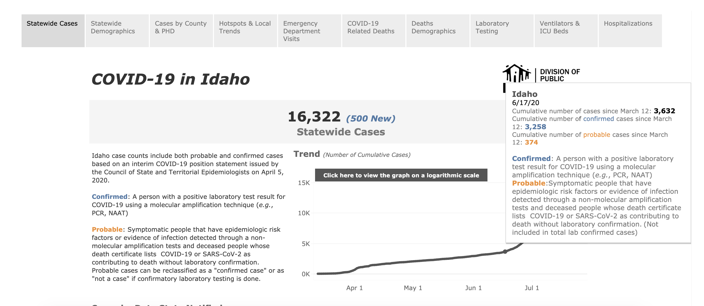

[ID] PCL Cases Historical
Issue number 597
pscsharon opened this issue on July 10, 2020 at 9:42 am
ID has been reporting probables alongside confirmed cases via their dashboard since inception. On States Daily, we have been tracking Positives but not Positive Cases (PCR) for all dates. To find these numbers, one needs to hover over the dashboard graphs for numbers from each day. We should check to see to see if we can backfill this data. 
Comments
This issue has been automatically marked as stale because it has not had recent activity. It will be closed if no further activity occurs. Thank you for your contributions!
This issue has been closed because it was stale for 15 days, and there was no further activity on it for 10 days. You can feel free to re-open it if the issue is important, and label it as “not stale.”
Extended the time series for Confirmed and Probable cases using the source above, also replaced our Cases (confirmed plus probable) time series from March 14, 2020 to April 28, 2020 to better align with the Confirmed and Probable breakdowns (differences were minor less than 100 a day, likely caused by small backfilling by the state and/or time or sourcing differences). Negatives were not updated because the state draws their total tests from Total PCR Tests (People) not Positive+Negative, and it’s a low priority metric.
Values updated: Changes (19).txt
Hey @pscsharon, I was able to download a data export from the dashboard with data for new confirmed cases and new probable cases by day.
Attached is a modified spreadsheet with calculated cumulative data: CTP_State_Total_Cases_Display_(2)_Full_Data_data.xlsx.